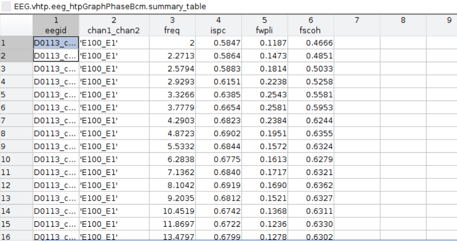
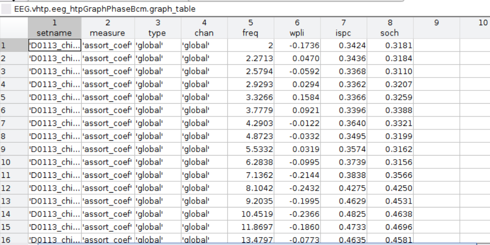
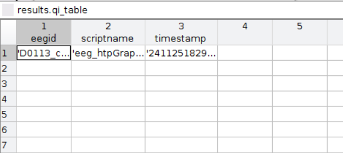

Graphing Phase Bcm
Overview
The eeg_htpGraphPhaseBcm function leverages the mathematical principles of phase synchronization and graph theory to analyze functional connectivity in EEG data. At its core, the function computes connectivity measures such as Debiased Weighted Phase Lag Index (DWPLI), Inter-Site Phase Clustering (ISPC), and Spectral Coherence (SCOH), each of which quantifies the degree of synchronization between EEG signals at different electrodes.
These metrics rely on the phase of the EEG signals, typically derived from the analytic signal obtained via the Hilbert transform or Fourier-based methods. By examining the consistency of phase differences between signal pairs over time, the function identifies relationships indicative of neural connectivity. The connectivity matrices are then processed using graph theory to represent the brain's network as nodes (EEG electrodes) and edges (connectivity strengths), enabling further computation of topological features. Thresholding methods such as mediansd filter out weaker connections, enhancing the interpretability of significant neural interactions.
Prerequisites
Ensure these toolboxes are added to the MATLAB path:
-
EEGLAB (Necessary for
EEGstructures) -
Braph Toolbox (Graph measures)
-
Brain Connectivity Toolbox (Connectivity metrics)
Syntax
[EEG, results] = eeg_htpGraphPhaseBcm(EEG, varargin);
Inputs:
EEG (struct): EEGLAB data structure. Must be epoched prior to processing.
Optional Parameters:
gpuon (default: true): Use GPU acceleration (logical).
outputdir (default: tempdir): Directory to save results (string).
threshold (default: mediansd): Method for thresholding (string).
combos (default: all unique pairs): Channel pairs for connectivity calculations (cell).
bandDefs (default includes delta, theta, alpha, etc.): Frequency band definitions (cell).
Outputs
Structure Outputs
EEG: Modified EEGLAB structure with connectivity results added in the .vhtp field which will contain qi_table, summary_table, and graph_table just like the results sturcture.
results: Structure containing computed measures and output file references, such as qi_table, summary_table, and graph_table.
File Outputs
Brain Connectivity Matrix (BCM) File:
Filename: [EEG filename]_bcm.[extension]
Content: The brain connectivity matrix (BCM) in a tabular format, containing connectivity measures such as ISPC, WPLI, and SCOH for pairs of channels across frequencies. Each measure is a 2d square matrix with each row and column being and eeg channel and each value being their connectivity strength with each channel pair.
Location: The directory specified by the outputdir parameter, defaulting to the system temporary directory if not provided.
Format: Parquet (default) or a text-based format depending on the useParquet parameter.
Graph Measures File:
Filename: [EEG filename]_graph.[extension]
Content: Contains a table of connectivity and frequency band data, which a graph is created from. The graphs are stored as a list with each frequency per step in frex. Each of these entries will contain an square matrix (channel x channel) with each element representing connectivity strength for a given frequency, the coressponding frequency value, and connectivty measure.
Location: Same as the BCM file.
Format: Matches the BCM file format.
Methods
Initialization:
Inputs are parsed and validated using inputParser, ensuring required toolboxes (e.g., Brain Connectivity Toolbox, BRAPH) are available. Channel combinations are generated if not manually provided. GPU assistance is enabled if specified, allowing efficient processing of large datasets.
Frequency Definition:
Frequencies are logarithmically spaced (e.g., 2–80 Hz) across 30 steps, suitable for wavelet-based time-frequency analysis.
Connectivity Calculation:
A Morlet wavelet convolution is performed for each frequency, generating phase-angle and power information for all channel pairs. Metrics such as ISPC, DWPLI, and SCOH are computed by iterating through all frequency steps.
BCM Construction:
BCMs are created for each frequency and metric, representing connectivity weights between all channel pairs. Thresholding is applied using a user-specified or default method (e.g., "mediansd"). Graph Measures:
The thresholded BCMs are converted to MATLAB graph objects, allowing graph-theoretic analysis (e.g., eigenvector centrality).
Output Management:
Results are saved in tabular formats (e.g., Parquet, CSV) for easy downstream analysis. Summaries and quality information (QI) are appended to the EEG structure.
Use Case Example
[EEG, results] = eeg_htpGraphPhaseBcm(EEG, 'gpuon', false, 'threshold', 'mediansd');
This use case demonstrates how to apply the eeg_htpGraphPhaseBcm function to compute connectivity measures and generate corresponding outputs, without GPU acceleration and a specific thresholding method. It is particularly useful for high-throughput analysis of EEG data with large datasets or high-resolution sampling. The mediansd method uses the median and standard deviation to determine thresholding for removing weak connectivity values, which helps in focusing on stronger, more significant connections.
Once it finished the EEG and results will both have the .summary_table, graph_table, and qi_table as fields, to find these fields under EEG they are listed under EEG.vhpt.eeg_htpGraphPhaseBcm, which look like the tables shown below:
Summary Table

Graph Table

Qi Table

Additional notes
The function includes detailed logging using a custom utility (note).
It validates dependencies and provides meaningful error messages for missing toolboxes or invalid inputs.
The duration for which the code runs depends on the number of channels, so expect longer run times for files with a large amount of channels
Additionally, GPU resources are reset after execution to prevent resource conflicts.